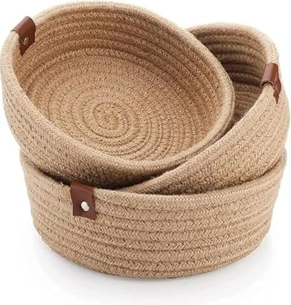

Turn-By-Turn Navigation with MapMyIndia Whether its a new destination or a familiar place, find your way without being lost using the boAt Lunar Discovery Smartwatch. Access directions using Turn-by-Turn navigation by Map MyIndia without reaching for your phone.
BUY NOW
Crystal Glass Design Dynamic Ring Flash 120 Hz FHD+ Display with AdaptiveSync Refresh Rate 108 MP Pro-grade Camera with Ring Flash Snapdragon 4 Gen 2 AE Fast Charging Experience Xiaomi HyperOS
BUY NOW

Set of 3 beautiful purple cotton rope baskets perfect for organizing toys, accessories, keys, fruits, and other household items.Crafted from durable cotton rope with reinforced stitching and sturdy leather handles for easy carrying and long-lasting use.
BUY NOW